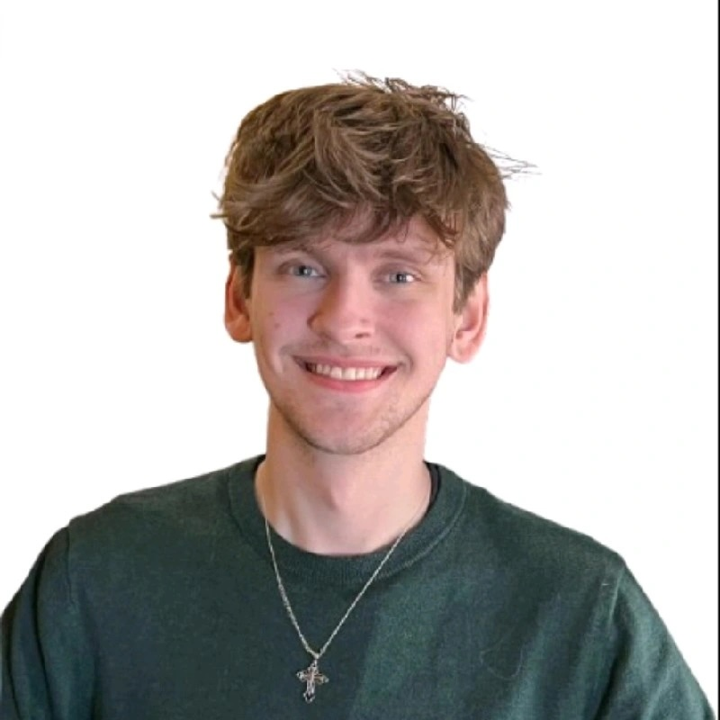

Hello, I'm
Liam Adams
Master's Student · Human-Computer Interaction
Immersive Interaction Lab · Grand Valley State University
My focus in HCI is cognitive psychology and theory in Extended Reality and AI. I am primarily interested in developing and expanding the backbone of the HCI field — building stronger theoretical foundations for how people perceive, think, and act within immersive digital environments.
Current Research
Peeking in 3D: Mixed Reality and the Cost of Cognitive Offloading
Investigating how mixed reality environments influence cognitive offloading strategies and their associated costs.
View all research →